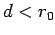
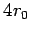
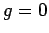
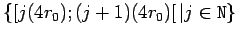
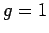
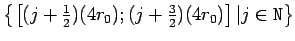
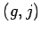
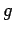
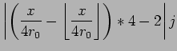

Nächste Seite: Implizite Raumpartitionierung Aufwärts: Explizite Raumpartitionierung Vorherige Seite: Explizite Raumpartitionierung Inhalt

prüfen zu müssen, können auch verschobene reguläre Gitter der Kantenlänge
erzeugt werden.Eindimensional benötigt man zwei Gitter:

:

:

mit |
 |
Im Zweidimensionalen werden vier und im Dreidimensionalen gar 8 Gitter benötigt. Zur Veranschaulichung des zweidimensionalen Falls dient Abb. 3.2 auf Seite  .
.
Mir ist keine Implementierungen dieser vielen Gitter bekannt, wohl auch, da ein begrenzender Faktor der Speicherplatz ist, der bei einer expliziten Speicherung aller Zellen im Simulationsgebiet eine Verachtfachung
(640MB*8=5,12GB) des Speicherbedarfs bedeutet. Deshalb wird in den angrenzenden Zellen in einem festen Gitter gesucht.